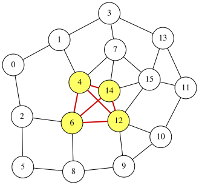

Maximum Clique Problem
Given an undirected graph $G=(V,E)$, the Maximum Clique problem aims to find a largest subset $S\subseteq V$ such that every pair of distinct vertices in $S$ is connected by an edge in $E$.
Assume that the vertices are labeled $0,1,\ldots,n−1$. We introduce $n$ binary variables $x_0, x_1, \ldots, x_{n-1}$, where $x_i=1$ if and only if node $i$ belongs to $S$ ($0\leq i\leq n−1$). Then, the size of $S$ is given by
\[\begin{aligned} \text{objective} &= \sum_{i=0}^{n-1}x_i. \end{aligned}\]For $S$ to be a clique, every pair of selected nodes must be connected by an edge. Equivalently, for every pair of nodes $i$ and $j$ such that $(i,j)\not\in E$ we cannot select both $i$ and $j$. This can be expressed by the constraint:
\[\begin{aligned} \text{constraint} &= \sum_{(i,j)\not\in E}x_ix_j \end{aligned}\]A feasible clique satisfies $constraint=0$. Thus, we obtain the following QUBO formulation $f$ (to be minimized):
\[\begin{aligned} f &= -\text{objective}+2\times \text{constraint} \end{aligned}\]where 2 is a penalty coefficient.
The optimal solution minimizing $f$ corresponds to a maximum clique, and the objective value equals the number of selected nodes.
QUBO++ problem for the maximum clique problem
Based on the formulation above, the following QUBO++ program constructs the QUBO expression $f$ for a 16-node graph and solves it using the Exhaustive Solver:
#include "qbpp.hpp"
#include "qbpp_exhaustive_solver.hpp"
#include "qbpp_graph.hpp"
int main() {
const size_t N = 16;
std::vector<std::pair<size_t, size_t>> edges = {
{0, 1}, {0, 2}, {1, 3}, {1, 4}, {2, 5}, {2, 6},
{3, 7}, {3, 13}, {4, 6}, {4, 7}, {4, 12}, {4, 14},
{5, 8}, {6, 8}, {6, 12}, {6, 14}, {7, 14}, {7, 15},
{8, 9}, {9, 10}, {9, 12}, {10, 11}, {10, 12}, {11, 13},
{11, 15}, {12, 14}, {12, 15}, {13, 15}, {14, 15}};
const size_t M = edges.size();
std::vector<std::vector<bool>> adj(N, std::vector<bool>(N, false));
for (auto [u, v] : edges) {
adj[u][v] = adj[v][u] = true;
}
auto x = qbpp::var("x", N);
auto objective = qbpp::sum(x);
auto constraint = qbpp::Expr(0);
for (size_t i = 0; i < N; ++i) {
for (size_t j = i + 1; j < N; ++j) {
if (!adj[i][j]) {
constraint += x[i] * x[j];
}
}
}
auto f = -objective + N * constraint;
f.simplify_as_binary();
auto solver = qbpp::exhaustive_solver::ExhaustiveSolver(f);
auto sol = solver.search();
std::cout << "objective = " << objective(sol) << std::endl;
qbpp::graph::GraphDrawer graph;
for (size_t i = 0; i < N; ++i) {
graph.add_node(qbpp::graph::Node(i).color(sol(x[i])));
}
for (size_t i = 0; i < M; ++i) {
auto edge = qbpp::graph::Edge(edges[i].first, edges[i].second);
if (sol(x[edges[i].first]) && sol(x[edges[i].second])) {
edge.color(1).penwidth(2.0);
}
graph.add_edge(edge);
}
graph.write("maxclique.svg");
}
From the edge list edges, we build an adjacency matrix adj, which allows us to test whether a given pair of nodes forms an edge in the graph.
For the vector x of N = 16 binary variables, the expressions objective, constraint, and f are constructed according to the QUBO formulation above.
In particular, if adj[i][j] is false, the quadratic term x[i] * x[j] is added to constraint.
The Exhaustive Solver is then used to find an optimal solution minimizing f, which is stored in sol. The values of objective and constraint evaluated at sol are printed.
A qbpp::graph::GraphDrawer object graph is created so that the selected clique nodes and clique edges are highlighted.
This program produces the following output:
objective = 4
constraint = 0
From this output, we obtain a maximum clique of 4 nodes without violating the constraint.
The result is visualized in maxclique.svg as follows:
